Script utilizado na aula da semana 3 da disciplina Manipulação e Visualização de Dados no R para demostrar as funções de customizações do pacote ggplot2do tidyverse.
- Customização dos gráficos
- Cores
- Legendas
- Eixos
- Fundo
- Texto e símbolos
- Output
- Salvando imagens
- Painéis
- Extra: gráficos e figuras nos gráficos
Instalando os pacotes
Nessa aula vamos utilizar o conjunto de dados da aula 1 e da aula 2 para demostrar as funcoes do ggplot2 do tidyverse. O primeiro passo então é carregar o pacote.
Para essa aula também vamos usar alguns outros pacotes que deverão ser instalados, caso você não os tenha em sua biblioteca:
- RColorBrewer
- ggsci
- hrbrthemes
- gridExtra
- egg
Carregando o conjunto de dados
Agora vamos determinar o diretório de trabalho e carregar os dados, conforme aprendemos na aula anterior. Vamos usar o conjunto de dados já manipulados, que fizemos na aula anterior e salvamos em.csv
Você deve colocar o diretório de acordo com o seu caminho no computador, e de acordo com a localização dos seus dados.
# setwd("C:/Marina/Pos-doutorado/PNPD_UFPR/Vis Man Dados/2024/Semana3")
dados <- read.csv("Dados_english.csv")
#dados <- readr::read_csv('https://raw.githubusercontent.com/scalonmc/VisMan/master/VisManDados/Aula1/Dados_manipulados.csv')
#dados <- dados %>% rename(Phenology = `Phenological group`)Cores
Podemos customizar a paleta padrão (default) adicionando mais uma camada!
1. Transparência (alpha)
Podemos modificar a transparência da cor com o atributo alpha.
ggplot(data = dados, aes(x=P, y=N, color= Phenology, shape = Vegetation, size=2)) +
geom_point(alpha=0.5)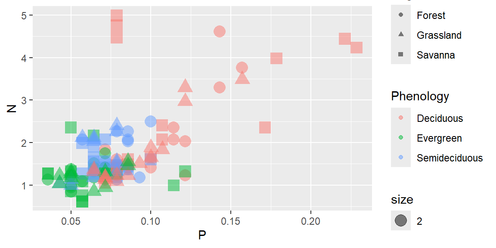
ggplot(dados, aes(x=SLA, fill=Phenology)) +
geom_density(alpha=0.5)+
facet_wrap(~Vegetation)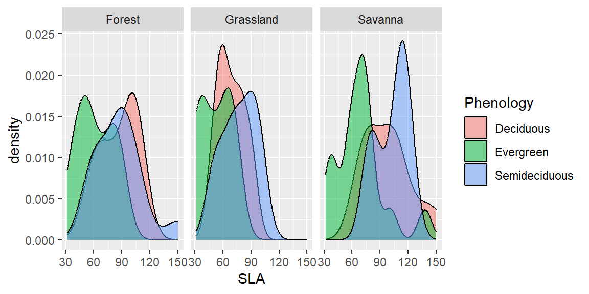
ggplot(dados, aes(x=Phenology, y=SLA ))+
geom_boxplot(aes(fill=Phenology, alpha = 0.7))+
facet_wrap(~Vegetation)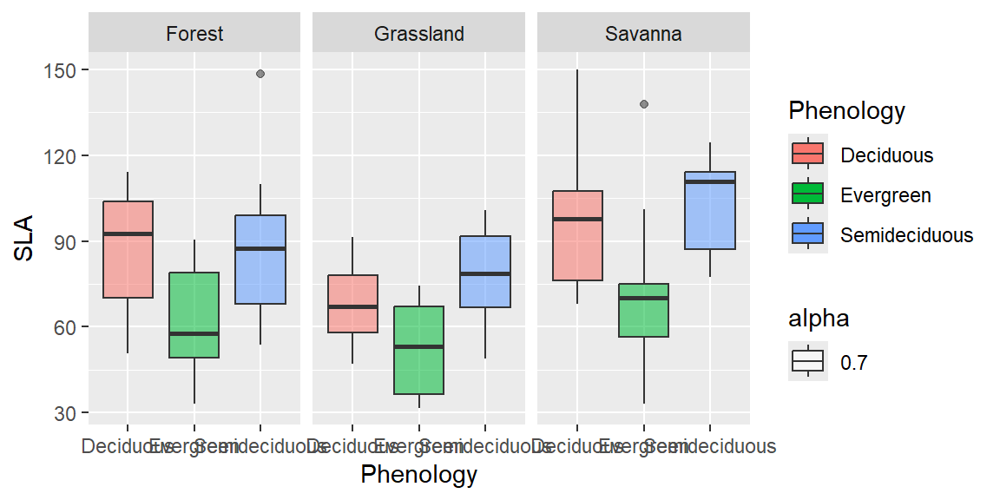
2. Luminescência e cromaticidade
scale_color_hue() também modifica as tonalidades da paleta nos aspetos luminescência (l) cromaticidade (c)
ggplot(data = dados) +
geom_point(aes(x=P, y=N, color= Phenology, shape = Vegetation, size=2))+
scale_color_hue(l=20)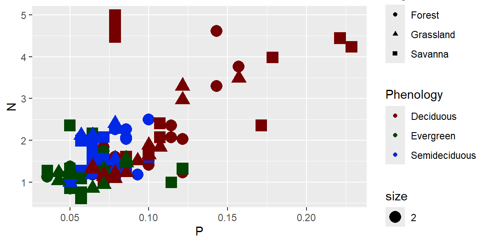
ggplot(data = dados) +
geom_point(aes(x=P, y=N, color= Phenology, shape = Vegetation, size=2))+
scale_color_hue(c=20)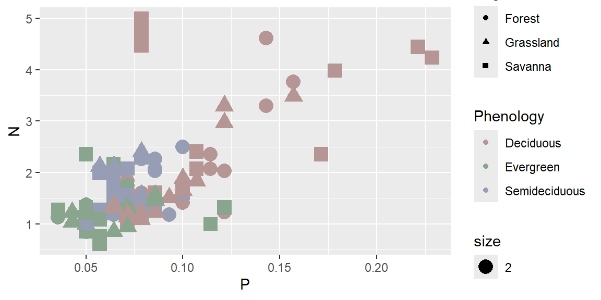
3. Tons de cinza
Incluido no ggplot2, a paleta de tons de cinza pode ser usada com uma função própria: scale_fillou color_ gray(). Nesse caso, pode-se escolher o começo e o final especificando start e end:
ggplot(dados, aes(x=Phenology, y = SLA, fill = Phenology)) + geom_boxplot()+
facet_wrap(~Vegetation)+
scale_fill_grey()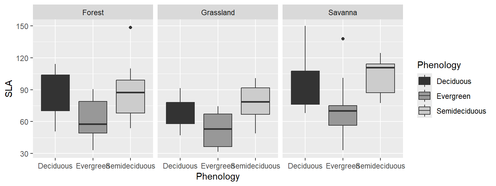
ggplot(dados, aes(x=Phenology, y = SLA, fill= Phenology)) +
geom_boxplot()+
facet_wrap(~Vegetation)+
scale_fill_grey(start =0.8, end=0.4)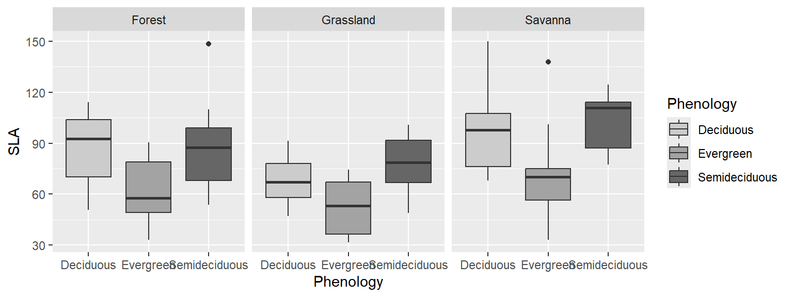
4. Paletas pré prontas
Modificando cores com scale_color_brewer() e scale_fill_brewer() do pacote RColorBrewer
Dentro de uma paleta, você também pode escolher os valores que você deseja começar. Nesse caso, você deve usar a função scale_color or fill_manual()
library(RColorBrewer)
display.brewer.all()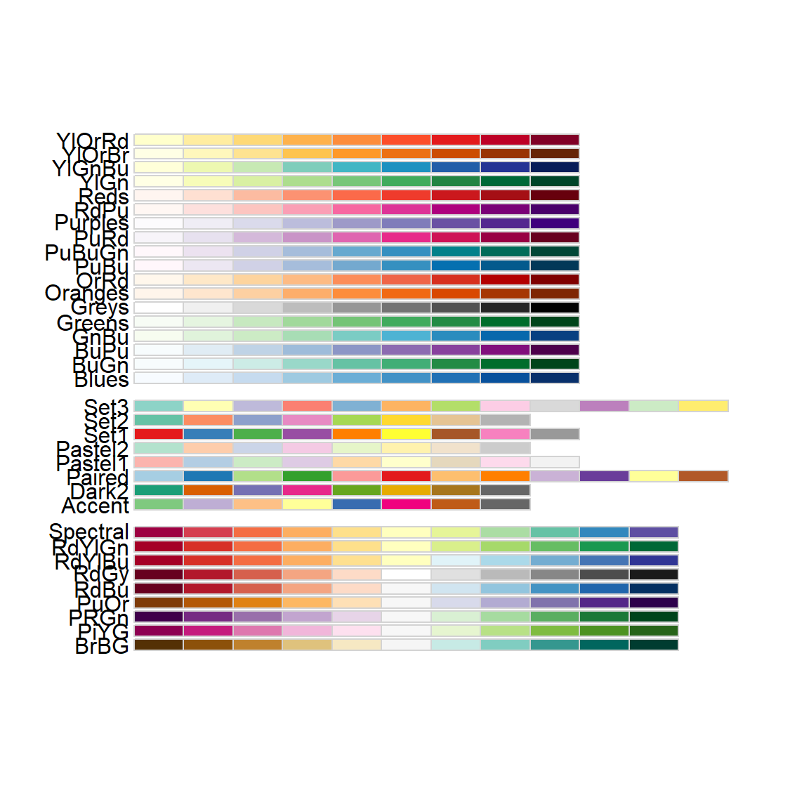
ggplot(data = dados) +
geom_point(aes(x=P, y=N, color= Phenology, shape = Vegetation, size=2)) +
scale_color_brewer(palette = "PuRd")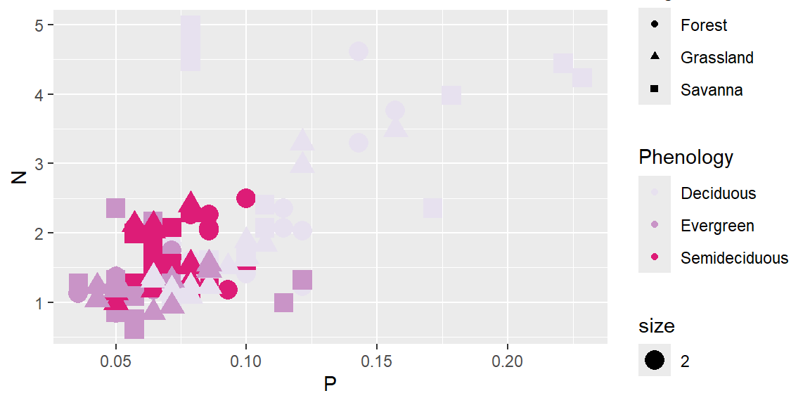
my_palette <- brewer.pal(7, name="PuRd")[c(2,4,6)]
ggplot(data = dados) +
geom_point(aes(x=P, y=N, color= Phenology, shape = Vegetation, size=2)) +
scale_color_manual(values=my_palette)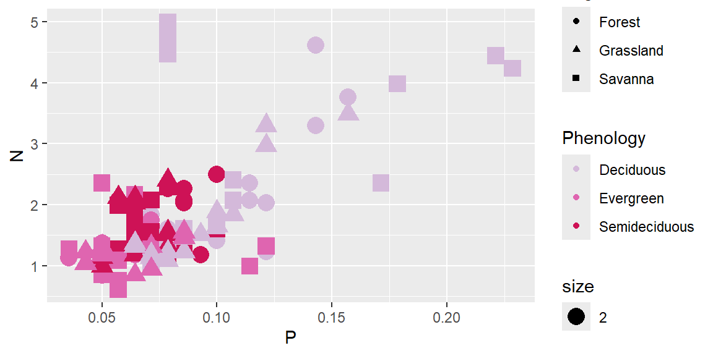
ggplot(dados, aes(x=SLA, fill=Phenology)) +
geom_density()+
facet_wrap(~Vegetation)+
scale_fill_brewer(palette="Accent")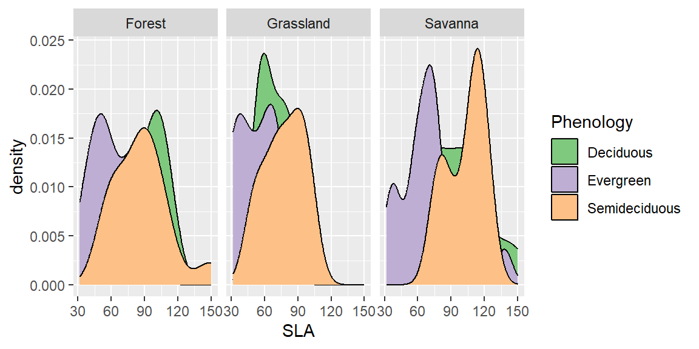
ggplot(dados, aes(x=Phenology, y = SLA, fill =Phenology)) +
geom_boxplot()+
scale_fill_brewer(palette = "Spectral")+
facet_wrap(~Vegetation)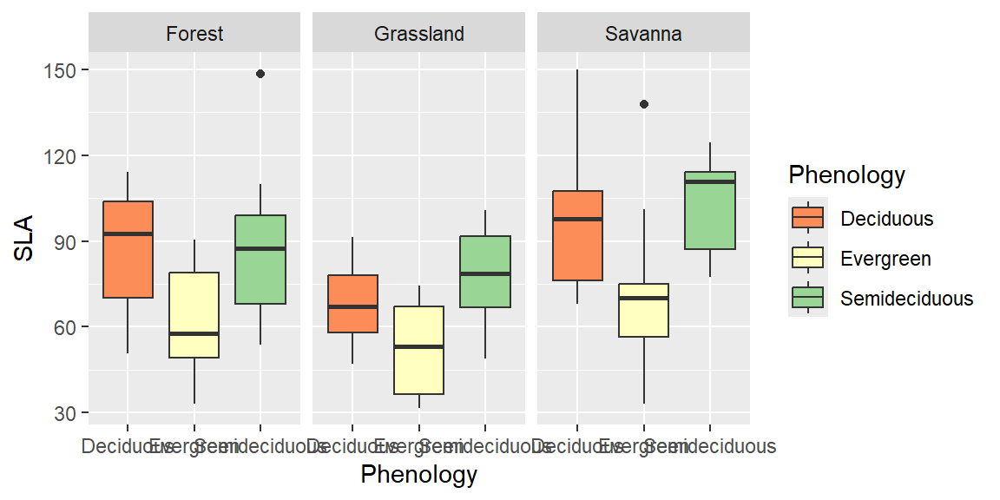
- Opção manual
Modificar as cores manualmente com a camada scale_color_manual() ou scale_fill_manual() informando os nomes por extenso (em inglês, entre aspas) ou informando os códigos das cores. Olhar na Tabela de referência.
Para html color codes: https://htmlcolorcodes.com/
ggplot(data = dados) +
geom_point(aes(x=P, y=N, color= Phenology, shape = Vegetation, size=2)) +
scale_color_manual(values = c("red", "green", "orange"))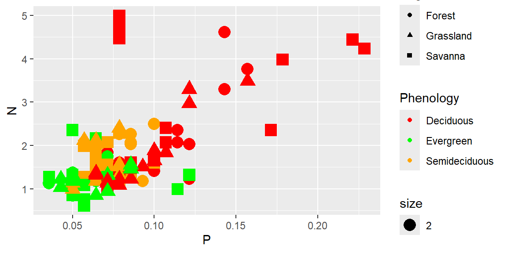
ggplot(dados, aes(x=SLA, fill=Phenology)) +
geom_density()+
facet_wrap(~Vegetation)+
scale_fill_manual(values = c("red", "lightblue", "darkgreen"))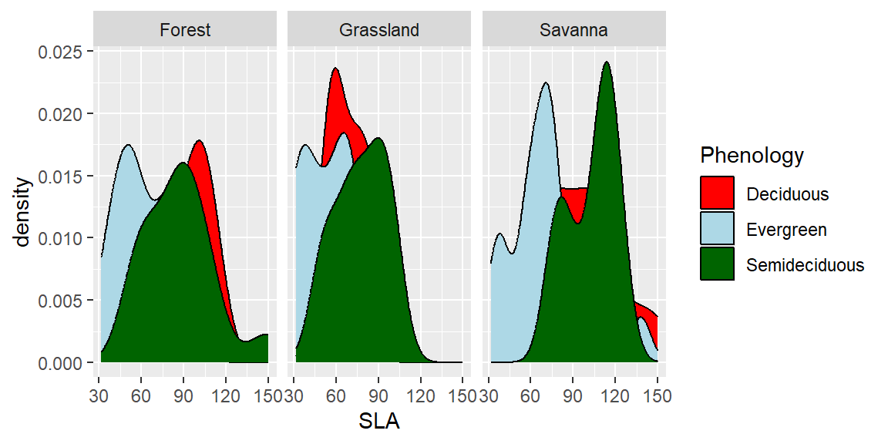
ggplot(dados, aes(x=Phenology, y = SLA, fill =Phenology)) +
geom_boxplot()+
scale_fill_manual(values = c("#33CC00", "#33CCFF", "#FF3399"))+
facet_wrap(~Vegetation)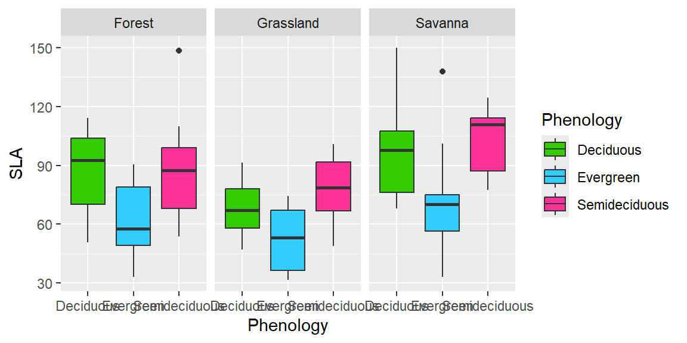
Dicas
- Faça sua própria paleta para não ficar repetindo os códigos. Para isso, crie um vetor com os códigos:
minha.paleta <- c("#33CC00", "#33CCFF", "#FF3399")
ggplot(dados, aes(x=SLA, fill=Phenology)) +
geom_density()+
facet_wrap(~Vegetation)+
scale_fill_manual(values = minha.paleta)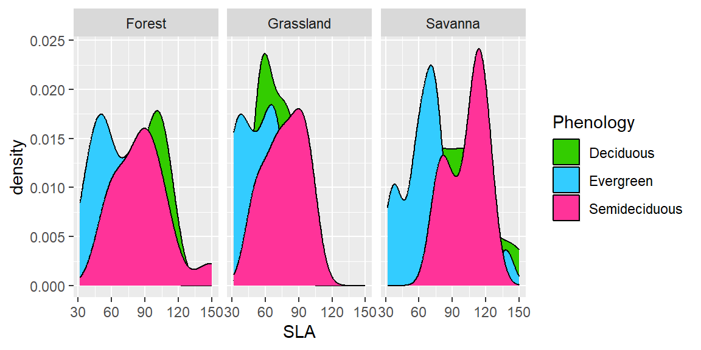
- Vários pacotes disponíveis com paletas interessantes! GitHub também aqui! Infinitas possibilidades!
library(ggsci)
ggplot(dados, aes(x=Phenology, y = SLA, fill= Phenology)) +
geom_boxplot()+
facet_wrap(~Vegetation)+
scale_fill_npg()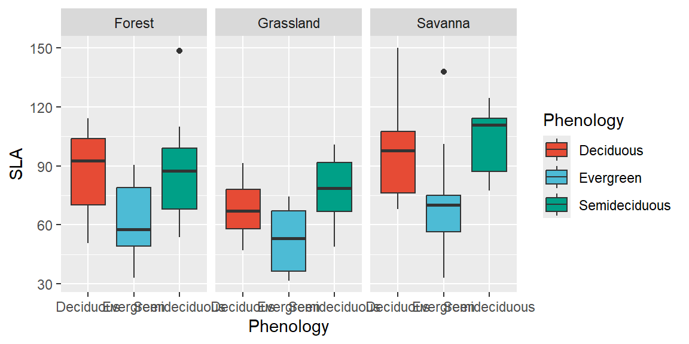
ggplot(dados, aes(x=SLA, fill=Phenology)) +
geom_density()+
facet_wrap(~Vegetation)+
scale_fill_simpsons()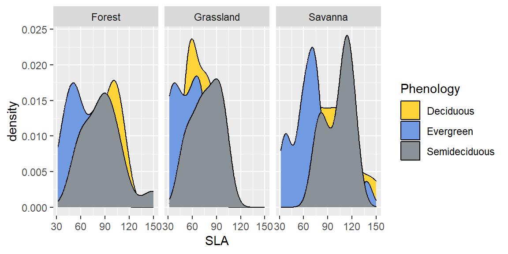
ggplot(data = dados) +
geom_point(aes(x=P, y=N, color= Phenology, shape = Vegetation, size=2)) +
scale_color_lancet()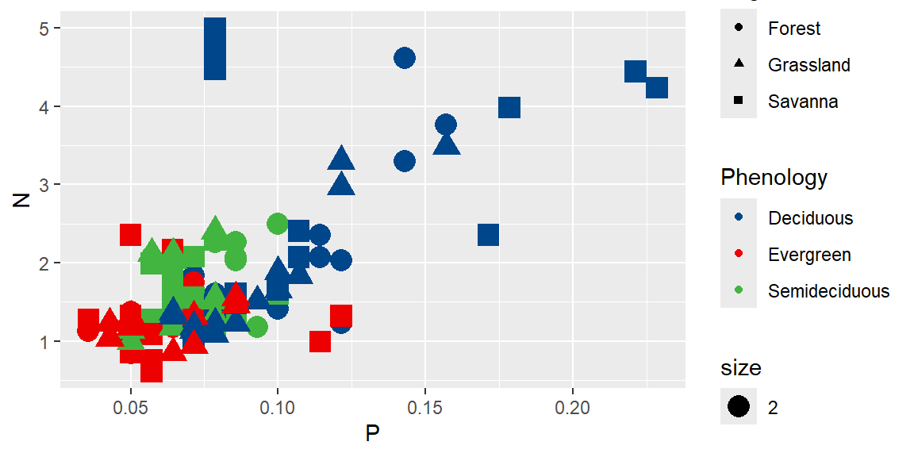
- Para gradientes - no caso da cor estar se referindo a uma variável contínua - usar scale_fill ou color_gradient(), gradient2() ou gradientn(). Pode definir a cor máxima e mínima e a cor dos valores de NA (o default é “grey50”)
ggplot(dados, aes(x=N, y=P, color=SLA))+
geom_point()+
scale_color_gradient(high = "black", low="white", na.value=NA)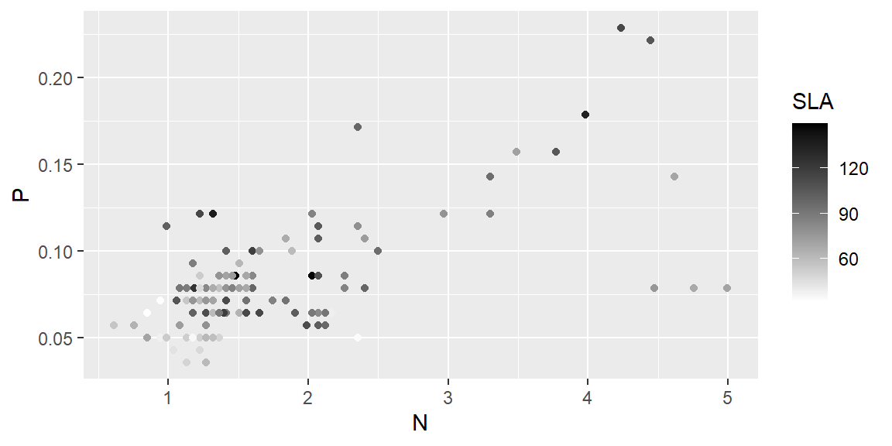
ggplot(data = dados) +
geom_point(aes(x=P, y=N, color= SLA, size=2))+
scale_color_gradient2(na.value=NA)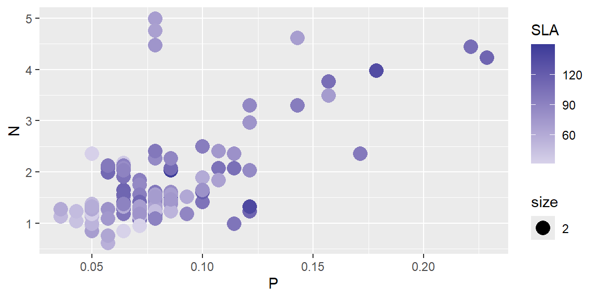
ggplot(data = dados) +
geom_point(aes(x=P, y=N, color= SLA, size=2))+
scale_color_gradientn(colours = terrain.colors(5), na.value=NA)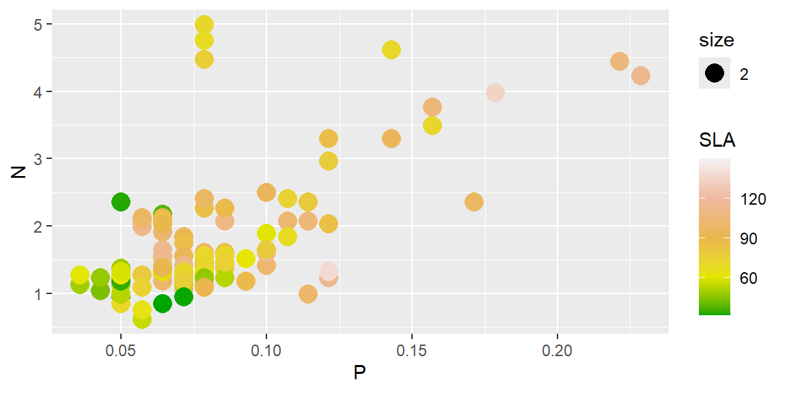
Shapes
Para mudar o formato dos símbolos a mesma lógica das cores pode ser usada. Nesse caso, a camada a ser adicionada é scale_shape_manual() e os valores inseridos de acordo com o código do formato.
Shapes e números de referência
{kind=link}
No caso dos números 21:25, note que são símbolos preenchidos. Assim, deve-se usar o comando fill no lugar do color
ggplot(data = dados, aes(x=P, y=N, fill= Phenology, shape = Vegetation, size=2)) +
geom_point(alpha=0.5)+
scale_shape_manual(values=c(21,22,23))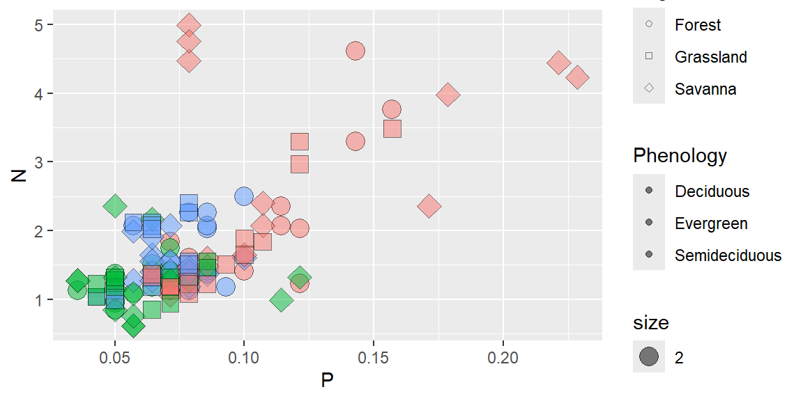
Eixos
Nome dos eixos
Modificar o nome dos eixos adicionando a camada labs()
Usar a função expression (paste) pra símbolos diferentes (alfabeto grego, subescrito, sobescrito). Veja as possibilidades aqui
ggplot(data = dados) +
geom_point(aes(x=P, y=N, color= Phenology, shape = Vegetation, size=2, alpha=0.5)) +
scale_color_lancet()+
labs(x= expression(paste("P"[leaf], " (mg ", kg^-1, ")")), y= expression(paste("N"[leaf], " (mg ", kg^-1, ")")))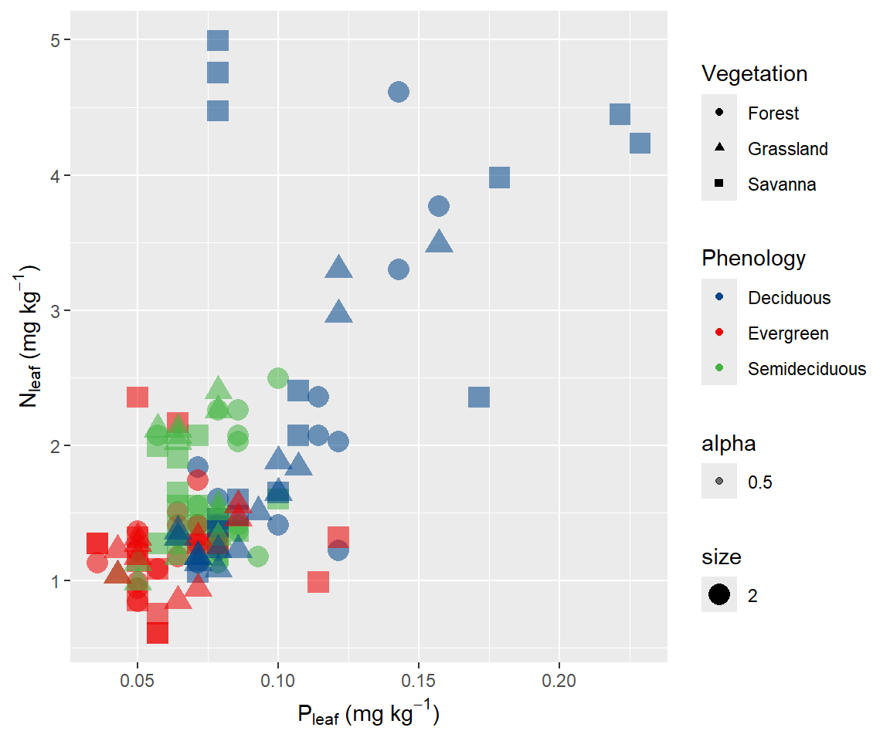
ggplot(dados, aes(x=Phenology, y = SLA, fill = Phenology)) + geom_boxplot()+
facet_wrap(~Vegetation)+
scale_fill_npg()+
labs(x= "Grupos fenológicos", y= expression(paste("SLA (", cm^2, g^-1, ")")))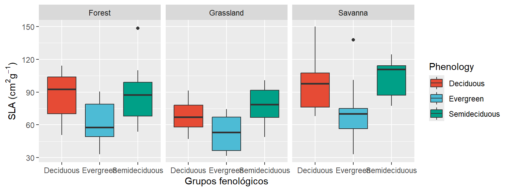
ggplot(dados, aes(x=SLA, fill=Phenology)) +
geom_density(aes(alpha=0.5))+
facet_wrap(~Vegetation)+
scale_fill_simpsons()+
labs(x= expression(paste("SLA (", cm^2, g^-1, ")")), y="Density", title="Figura 1")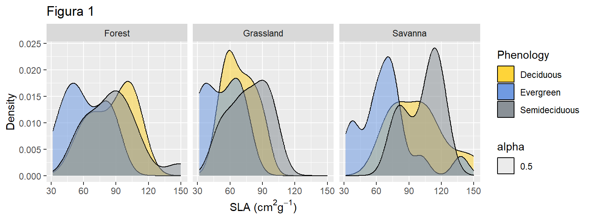
Modificar limites e escala
Limites com xlim() e ylim() ou coord_cartesian()
A diferença entre essas duas funções é que com xlim() ou ylim() os valores que não estão no intervalo definido são excluídos. No coord_cartesian() isso não acontece.
ggplot(data = dados) +
geom_point(aes(x=P, y=N, color= Phenology, shape = Vegetation, size=2, alpha=0.5)) +
scale_color_lancet()+
labs(x= expression(paste("P"[leaf], " (mg ", kg^-1, ")")), y= expression(paste("N"[leaf], " (mg ", kg^-1, ")")))+
xlim(0, 0.3) + ylim(0,4) 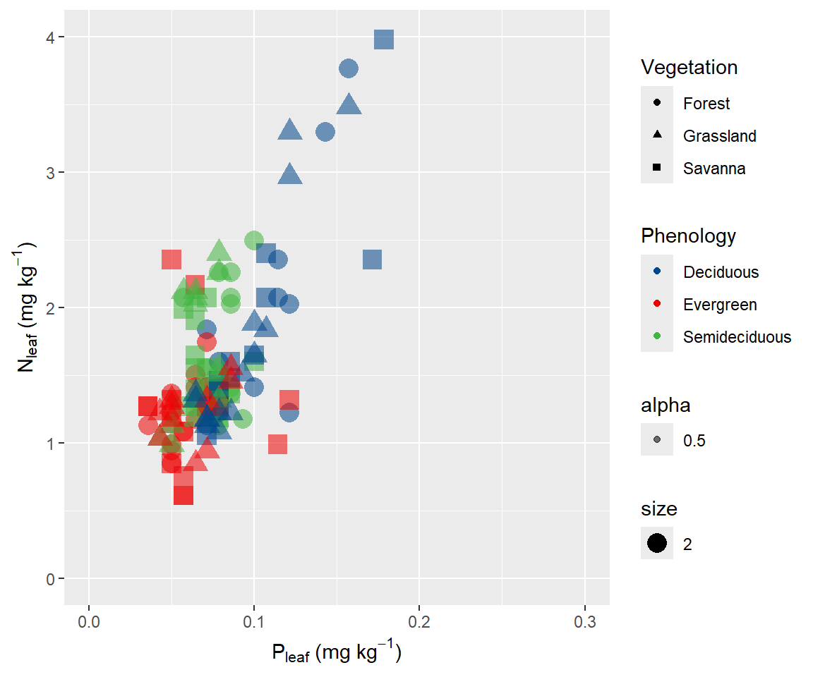
ggplot(data = dados) +
geom_point(aes(x=P, y=N, color= Phenology, shape = Vegetation, size=2, alpha=0.5)) +
scale_color_lancet()+
labs(x= expression(paste("P"[leaf], " (mg ", kg^-1, ")")), y= expression(paste("N"[leaf], " (mg ", kg^-1, ")")))+
coord_cartesian(xlim = c(0, 0.3), ylim = c(0, 4))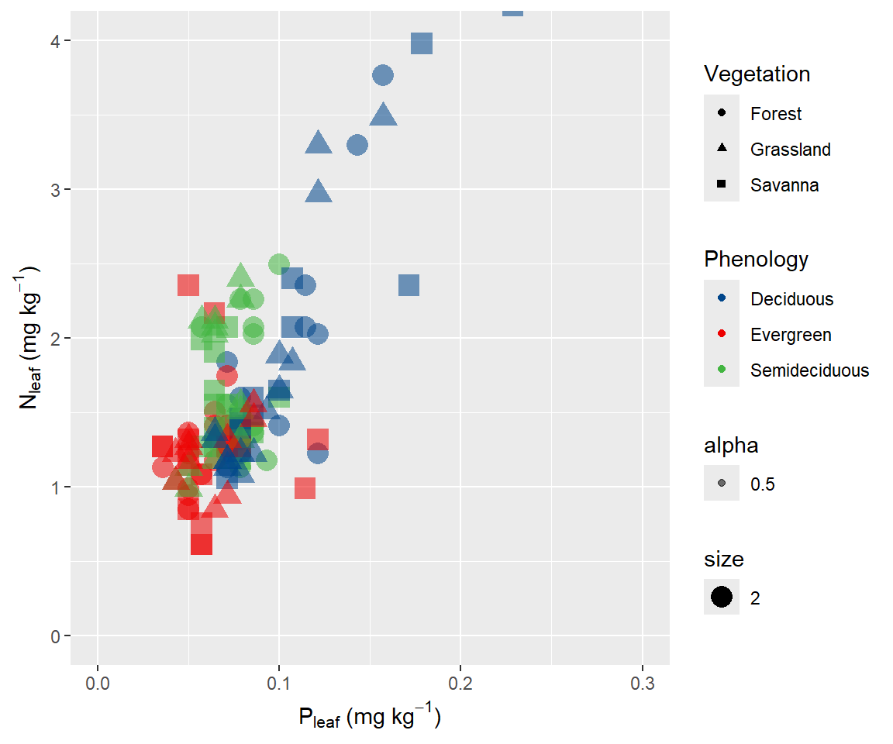
scale_xou y_continuous() e scale_xou y_discrete()
Para contornar esse default irritante do eixo flutuante, e resolver todos nossos problemas de customização dos eixos, recomendo usar scale_x_continuous() e scale_y_continuous(). Dessa forma, com apenas uma camada, modificamos TUDO relacionado aos eixos: nome, limites, forçar a origem e intervalos (breaks).
ggplot(data = dados) +
geom_point(aes(x=P, y=N, color= Phenology, shape = Vegetation, size=2, alpha=0.5)) +
scale_color_lancet()+
scale_x_continuous(expand = c(0,0), limits = c(0, 0.3), name = expression(paste("P"[leaf], " (mg ", kg^-1, ")")))+
scale_y_continuous(expand = c(0,0), limits = c(0,6), name =expression(paste("N"[leaf], " (mg ", kg^-1, ")")), breaks = c(0.5,1.5,2,3,4.5,5.5)) ggplot(data = dados) +
geom_point(aes(x=P, y=N, color= Phenology, shape = Vegetation, size=2, alpha=0.5)) +
scale_color_lancet()+
scale_x_continuous(expand = c(0,0), limits = c(0, 0.3), name = expression(paste("P"[leaf], " (mg ", kg^-1, ")")))+
scale_y_continuous(expand = c(0,0), limits = c(0,6), name =expression(paste("N"[leaf], " (mg ", kg^-1, ")")), breaks = seq(0,6, by=0.5))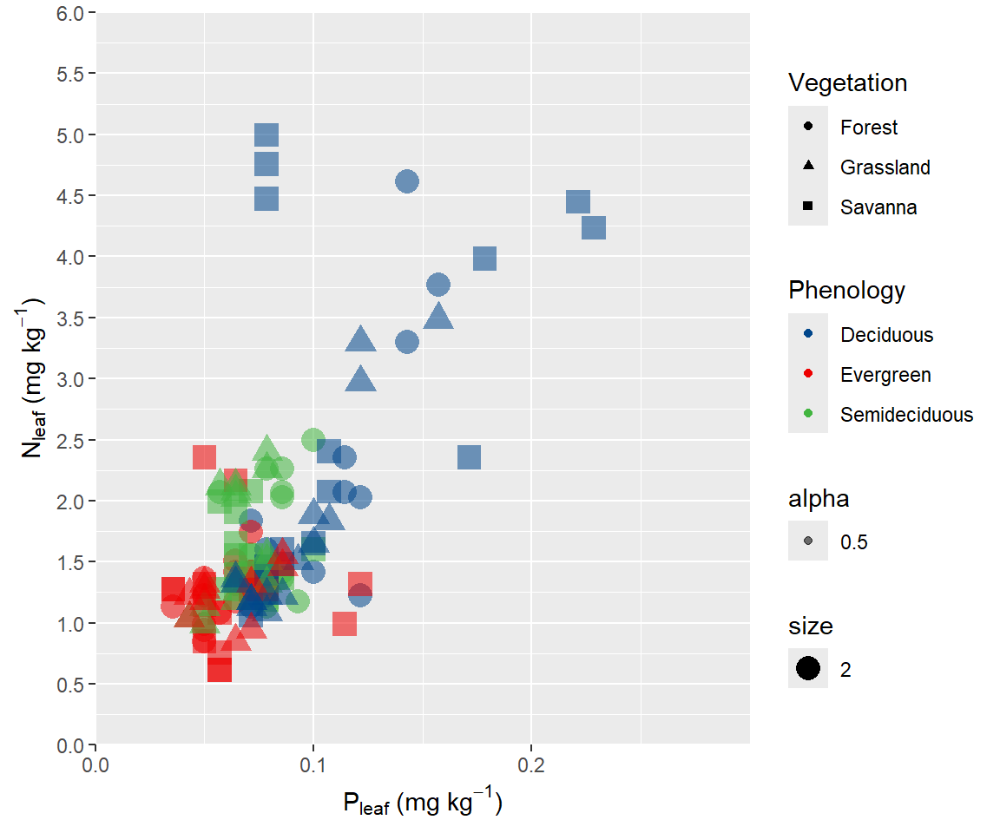
ggplot(data = dados) +
geom_point(aes(x=P, y=N, color= Phenology, shape = Vegetation, size=2, alpha=0.5)) +
scale_color_lancet()+
scale_x_continuous(expand = c(0,0), limits = c(0, 0.3), name = expression(paste("P"[leaf], " (mg ", kg^-1, ")")))+
scale_y_continuous(expand = c(0,0), limits = c(0,6), name =expression(paste("N"[leaf], " (mg ", kg^-1, ")")), n.breaks = 10) 
Transformações diretas com scale_x ou y_ log10()
ggplot(data = dados) +
geom_point(aes(x=P, y=N, color= Phenology, shape = Vegetation, size=2, alpha=0.5)) +
scale_color_lancet()+
scale_x_log10(name = expression(paste("log P"[leaf], " (mg ", kg^-1, ")")))+
scale_y_log10(name =expression(paste("log N"[leaf], " (mg ", kg^-1, ")"))) 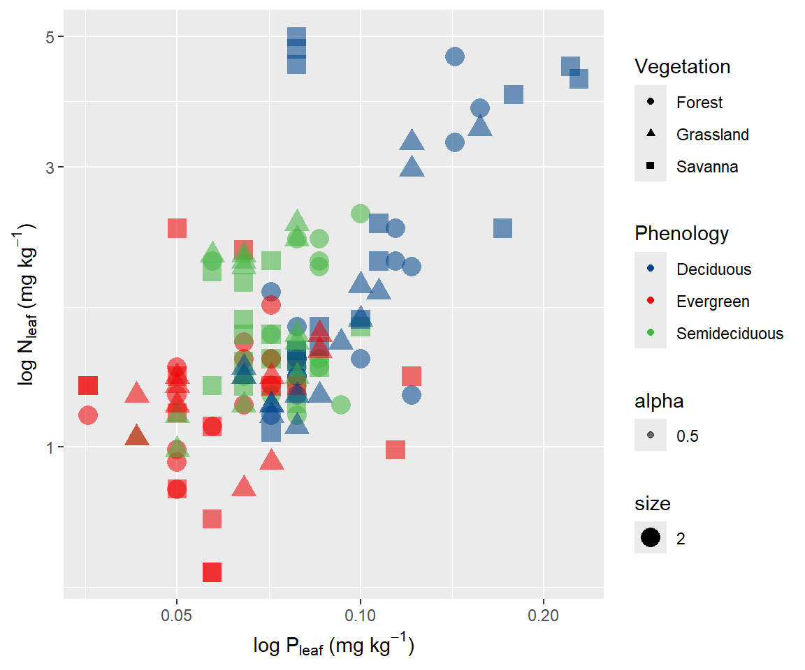
Modificando com theme()
A camada theme() é usada para mudar aspectos do texto (fonte, tipo, cor, tamanho e ângulo)
windowsFonts() para ver os nomes e as fontes disponíveis pra você - caso necessário, carregar extrafont::font_import()
Atenção para a justificação com vjust ou hjust quando modificar o ângulo
Também é usada para remover eixo e marcas!
# windowsFonts()
ggplot(dados, aes(x=Phenology, y = SLA, fill =Phenology)) +
geom_boxplot()+
facet_wrap(~Vegetation)+
scale_fill_npg()+
labs(x= "Grupos fenológicos", y= expression(paste("SLA (", cm^2, g^-1, ")"))) +
theme (axis.text.x = element_text(family = "serif", face = "italic", color = "red", size = 12, angle = 45, hjust=1))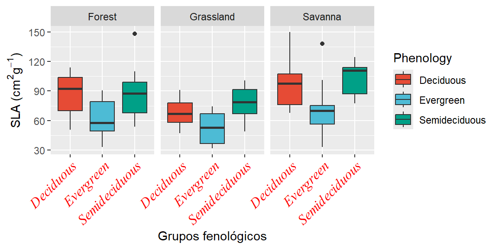
ggplot(dados, aes(x=Phenology, y = SLA, fill =Phenology)) +
geom_boxplot()+
facet_wrap(~Vegetation)+
scale_fill_npg()+
labs(y= expression(paste("SLA (", cm^2, g^-1, ")"))) +
theme(axis.text.x = element_blank(),
axis.ticks.x = element_blank(), axis.title.x = element_blank())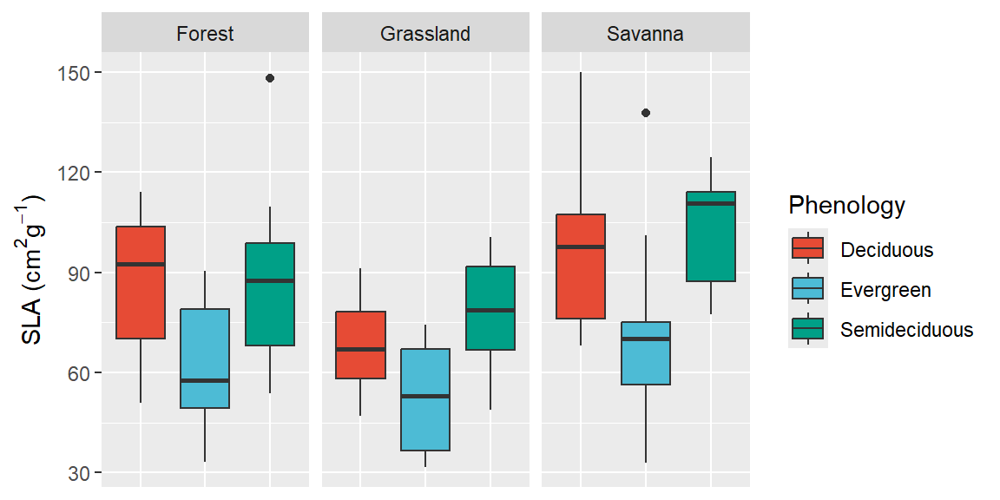
Fundo
O theme() Também pode ser usado para modificar o fundo, utilizando templates prontos, como theme_classic() ou theme_bw(), ou personalizando todos os aspectos (linhas de grade, cor do background, etc.)
ggplot(data = dados) +
geom_point(aes(x=P, y=N, color= Phenology, shape = Vegetation, size=2, alpha=0.5)) +
scale_color_lancet()+
scale_x_log10(name = expression(paste("log P"[leaf], " (mg ", kg^-1, ")")))+
scale_y_log10(name =expression(paste("log N"[leaf], " (mg ", kg^-1, ")"))) +
theme_classic()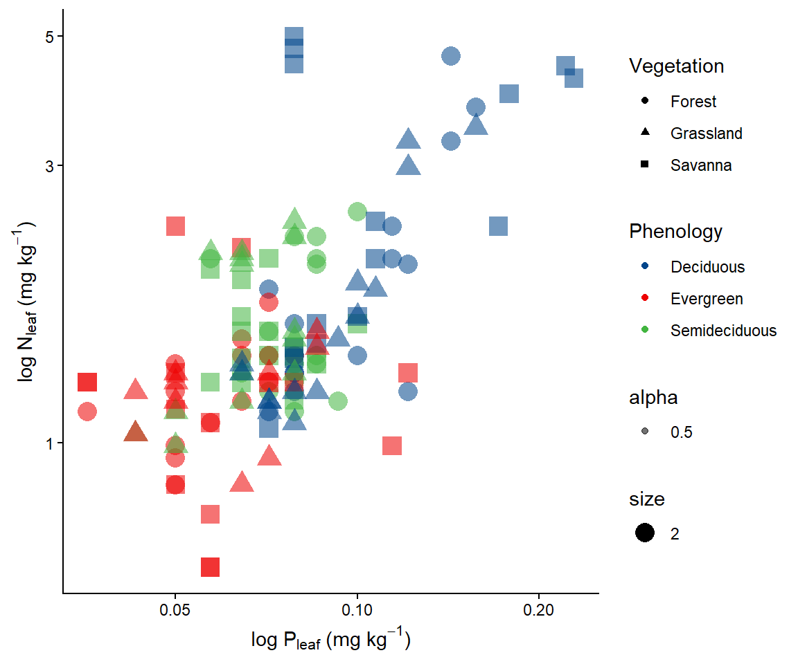
Atenção para conflitos entre as camadas theme() e os templates como theme_classic() -> o template deve vir antes.
ggplot(dados, aes(x=Phenology, y = SLA, fill =Phenology)) +
geom_boxplot()+
facet_wrap(~Vegetation)+
scale_fill_npg()+
labs(y= expression(paste("SLA (", cm^2, g^-1, ")"))) +
theme_bw()+
theme(axis.text.x = element_blank(),
axis.ticks.x = element_blank(), axis.title.x = element_blank())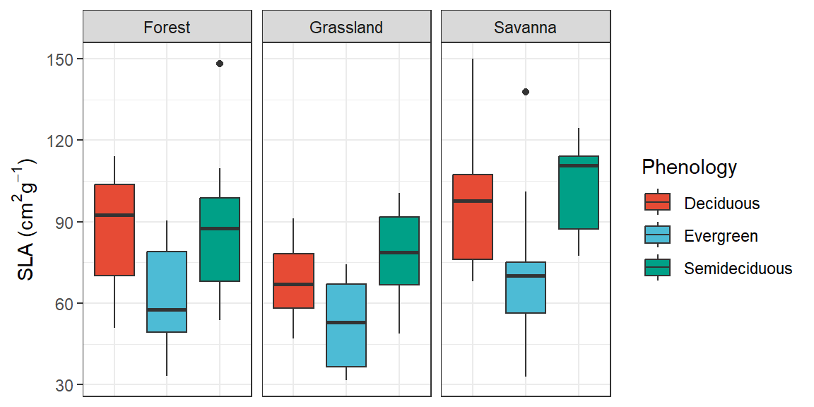
Legendas
Guides
Para tirar legendas específicas usando guides():
ggplot(data = dados) +
geom_point(aes(x=P, y=N, color= Phenology, shape = Vegetation, size=2, alpha=0.5)) +
scale_color_lancet()+
scale_x_log10(name = expression(paste("log P"[leaf], " (mg ", kg^-1, ")")))+
scale_y_log10(name =expression(paste("log N"[leaf], " (mg ", kg^-1, ")"))) +
theme_classic()+
guides(alpha= "none", size= "none")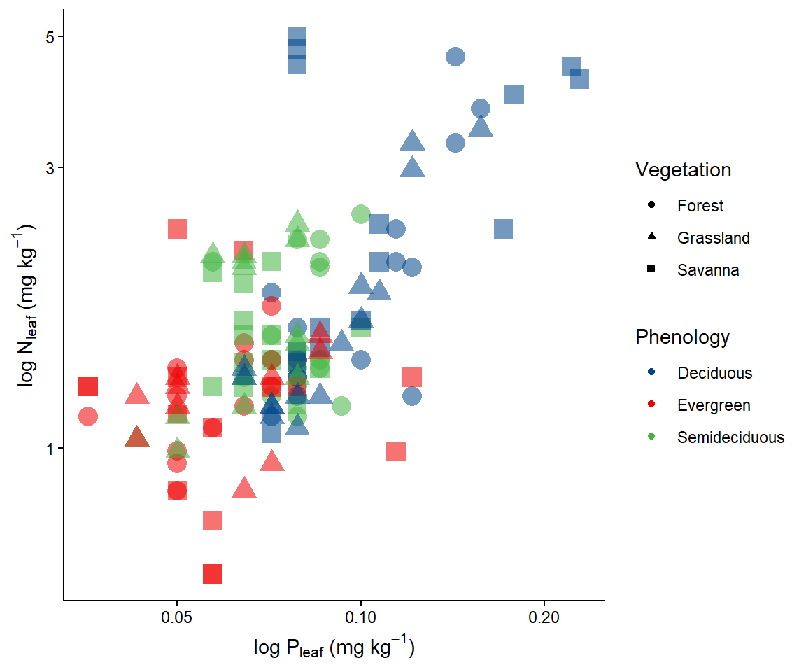
Theme
Para tirar todas as legendas usando theme(legend.position = “none”):
ggplot(data = dados) +
geom_point(aes(x=P, y=N, color= Phenology, shape = Vegetation, size=2, alpha=0.5)) +
scale_color_lancet()+
scale_x_log10(name = expression(paste("log P"[leaf], " (mg ", kg^-1, ")")))+
scale_y_log10(name =expression(paste("log N"[leaf], " (mg ", kg^-1, ")"))) +
theme_classic()+
theme(legend.position = "none")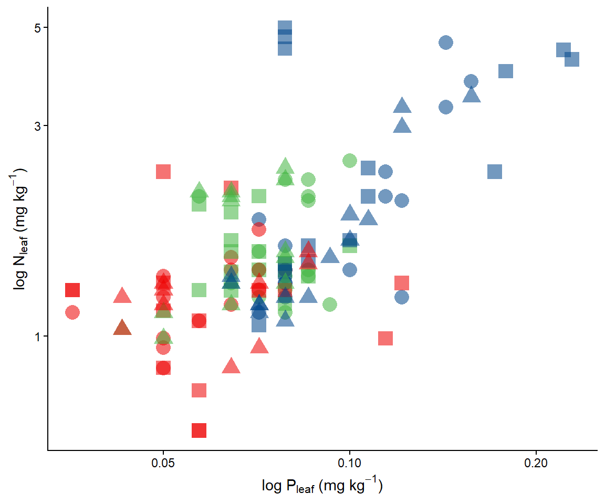
Da mesma forma que nos eixos, dentro de theme() podemos modificar todos os aspectos do texto e título da legenda (cor, tamanho, fonte).
ggplot(dados, aes(x=Phenology, y = SLA, fill =Phenology)) +
geom_boxplot()+
facet_wrap(~Vegetation)+
scale_fill_npg()+
labs(y= expression(paste("SLA (", cm^2, g^-1, ")"))) +
theme_bw()+
theme(legend.title = element_blank(), legend.text = element_text(size=10, color="red"), axis.text.x=element_blank(), axis.ticks.x = element_blank(), axis.title.x = element_blank())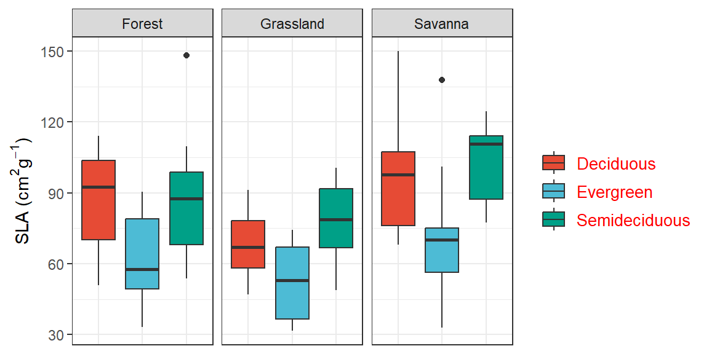
Importante!
Para modificar os nomes (labels) diretamente no gráfico deve-se fazer na camada de scale(): Mas atenção para não fazer confusão com seus fatores!!! Melhor mudar direto no dataset para garantir que está certo!
ggplot(dados, aes(x=Phenology, y = SLA, fill =Phenology)) +
geom_boxplot()+
facet_wrap(~Vegetation)+
scale_fill_npg(name= "Grupos fenológicos",labels = c("Decíduas", "Sempre-verdes","Brevidecíduas"))+
labs(y= expression(paste("SLA (", cm^2, g^-1, ")"))) +
theme_bw()+
theme(legend.text = element_text(size=10), axis.text.x=element_blank(),
axis.ticks.x = element_blank(), axis.title.x = element_blank())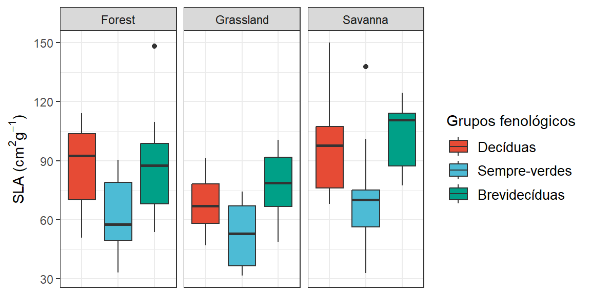
Posição e fundo
Para mudar a posição e o fundo da legenda - tudo dentro de theme()
Mudei a ordem também pra ficar minha versão final de cada plot. Para isso reordenei os fatores direto no dataset final.
dados$Vegetation <-ordered(dados$Vegetation, levels = c("Forest", "Savanna", "Grassland"))
dados$Phenology <- ordered(dados$Phenology, levels = c("Evergreen", "Semideciduous", "Deciduous"))
boxplot<- ggplot(dados, aes(x=Phenology, y = SLA, fill = Phenology)) +
geom_boxplot()+
facet_wrap(~Vegetation)+
scale_fill_npg(name= "Grupos fenológicos",labels = c("Sempre-verdes","Brevidecíduas","Decíduas"))+
labs(y= expression(paste("SLA (", cm^2, g^-1, ")"))) +
theme_bw()+
theme(legend.position = c(0.85,0.85),legend.text = element_text(size=8), legend.title = element_text(size=8), axis.text.x=element_blank(),
axis.ticks.x = element_blank(), axis.title.x = element_blank())
boxplot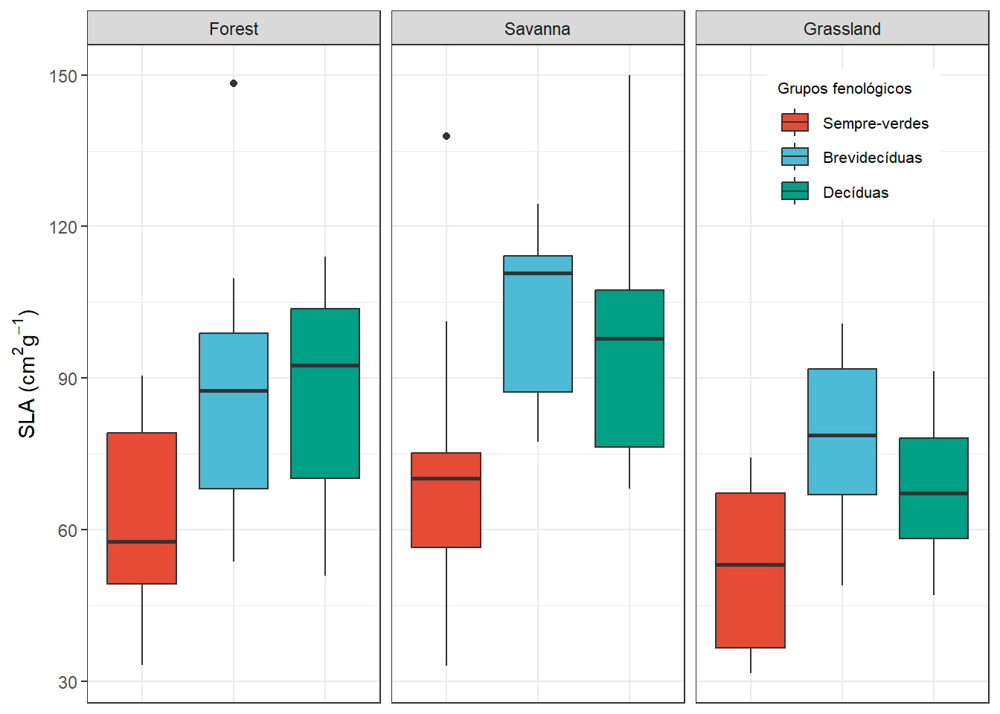
pontos <- ggplot(dados) +
geom_point(aes(x=P, y=N, color= Phenology, shape = Vegetation, size=2, alpha=0.5)) +
scale_color_npg(labels = c("Sempre-verdes","Brevidecíduas","Decíduas"))+
scale_x_log10(name = expression(paste("log P"[leaf], " (mg ", kg^-1, ")")))+
scale_y_log10(name =expression(paste("log N"[leaf], " (mg ", kg^-1, ")"))) +
theme_classic()+
guides(alpha="none", size="none", shape="none", colour = guide_legend(override.aes = list(size=4)))+ #para mudar o tamanho do símbolo dentro da legenda
theme(legend.position = c(0.85,0.15), legend.title = element_blank(),
legend.background = element_rect(color="black", linetype="solid"))
pontos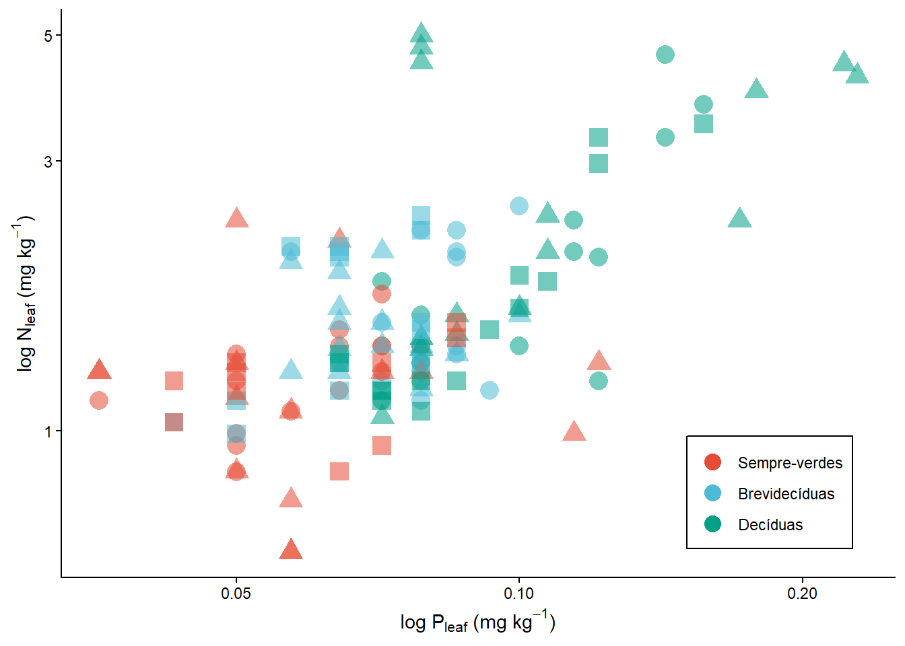
densidade <- ggplot(dados, aes(x=SLA, fill=Phenology)) +
geom_density(aes(alpha=0.5))+
scale_fill_npg(labels = c("Sempre-verdes","Brevidecíduas","Decíduas"))+
labs(x= expression(paste("SLA (", cm^2, g^-1, ")")), y="Density")+
guides(alpha="none")+
theme_minimal()+
theme(legend.title= element_blank(), legend.position = c(0.85,0.85))
densidade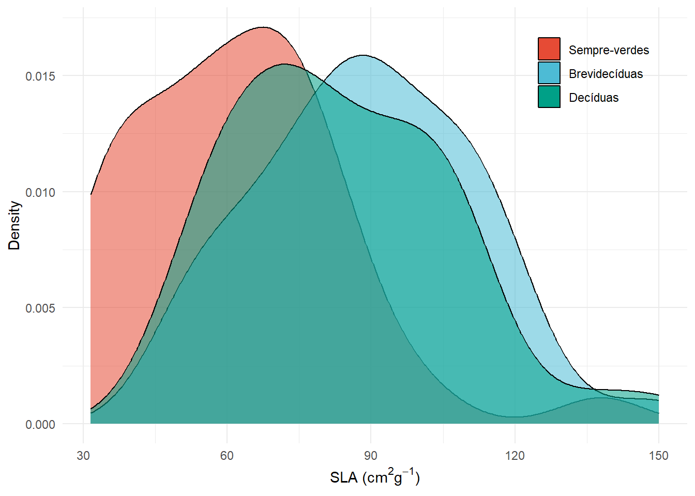
Inserir anotações
Utilizando annotate
Call:
lm(formula = N ~ P, data = dados)
Residuals:
Min 1Q Median 3Q Max
-1.3127 -0.3589 -0.1391 0.2210 3.3161
Coefficients:
Estimate Std. Error t value Pr(>|t|)
(Intercept) 0.3044 0.1595 1.909 0.0585 .
P 17.4744 1.8497 9.447 2.29e-16 ***
---
Signif. codes: 0 '***' 0.001 '**' 0.01 '*' 0.05 '.' 0.1 ' ' 1
Residual standard error: 0.6682 on 127 degrees of freedom
Multiple R-squared: 0.4127, Adjusted R-squared: 0.4081
F-statistic: 89.25 on 1 and 127 DF, p-value: 2.285e-16pontos.final <- pontos + annotate("text", label = "r² = 0.41", x=0.04, y=5)
pontos.finalUtilizando stat_summary()
Df Sum Sq Mean Sq F value Pr(>F)
Phenology 2 16625 8313 19.613 4.51e-08 ***
Vegetation 2 11705 5853 13.809 4.13e-06 ***
Phenology:Vegetation 4 749 187 0.442 0.778
Residuals 117 49587 424
---
Signif. codes: 0 '***' 0.001 '**' 0.01 '*' 0.05 '.' 0.1 ' ' 1
3 observations deleted due to missingnessTukeyHSD(ano.box, "Phenology") Tukey multiple comparisons of means
95% family-wise confidence level
Fit: aov(formula = SLA ~ Phenology * Vegetation, data = dados)
$Phenology
diff lwr upr p adj
Semideciduous-Evergreen 26.796086 16.06035 37.53183 0.0000001
Deciduous-Evergreen 21.732511 10.99677 32.46825 0.0000137
Deciduous-Semideciduous -5.063575 -15.60351 5.47636 0.4912441boxplot.final <- boxplot + stat_summary(geom = "text", label = c("a", "b", "b", "a", "b", "b", "a", "b", "b"), fun=max, vjust=-1)+ ylim(20,160)
boxplot.final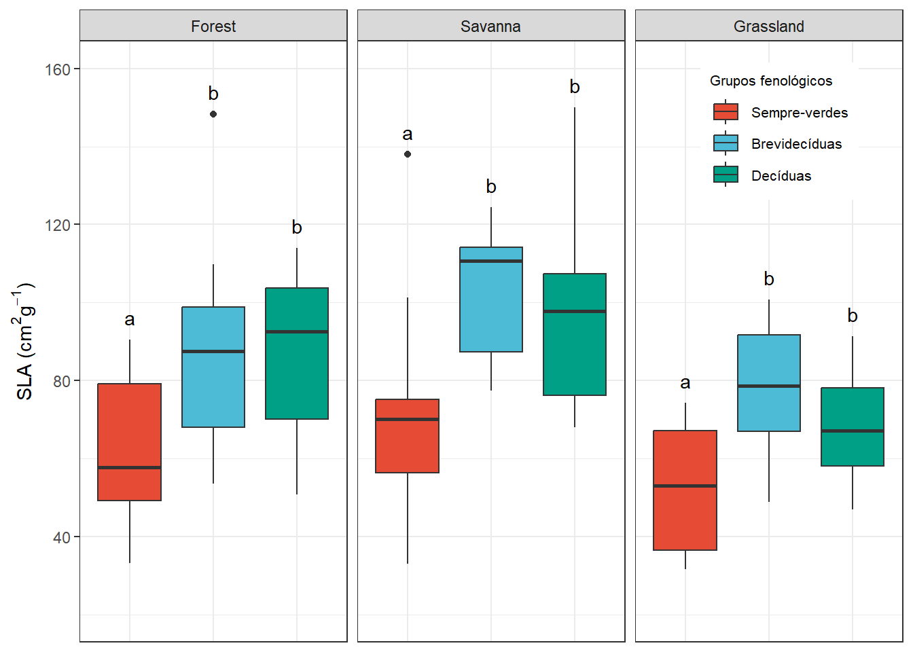
Utilizando geom_label()
densidade <- ggplot(dados, aes(x=SLA, fill=Phenology)) +
geom_density(aes(alpha=0.5))+
scale_fill_npg(labels = c("Sempre-verdes","Brevidecíduas","Decíduas"))+
labs(x= expression(paste("SLA (", cm^2, g^-1, ")")), y="Density")+
guides(alpha="none")+
theme_minimal()+
theme(legend.title= element_blank(), legend.position = "none")
densidade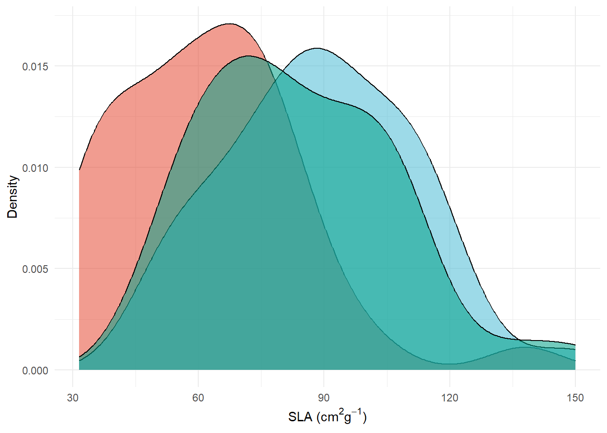
#pal_npg("nrc")(3) #para ver o número exato das 3 primeiras cores da paleta
densidade.final <- densidade +
geom_label(aes(x=40, y=0.015, label="Evergreen"), fill="#E64B35FF") +
geom_label(aes(x=130, y=0.01, label="Semideciduous"), fill="#4DBBD5FF") +
geom_label(aes(x=80, y=0.016, label="Deciduous"), fill="#00A087FF")
densidade.final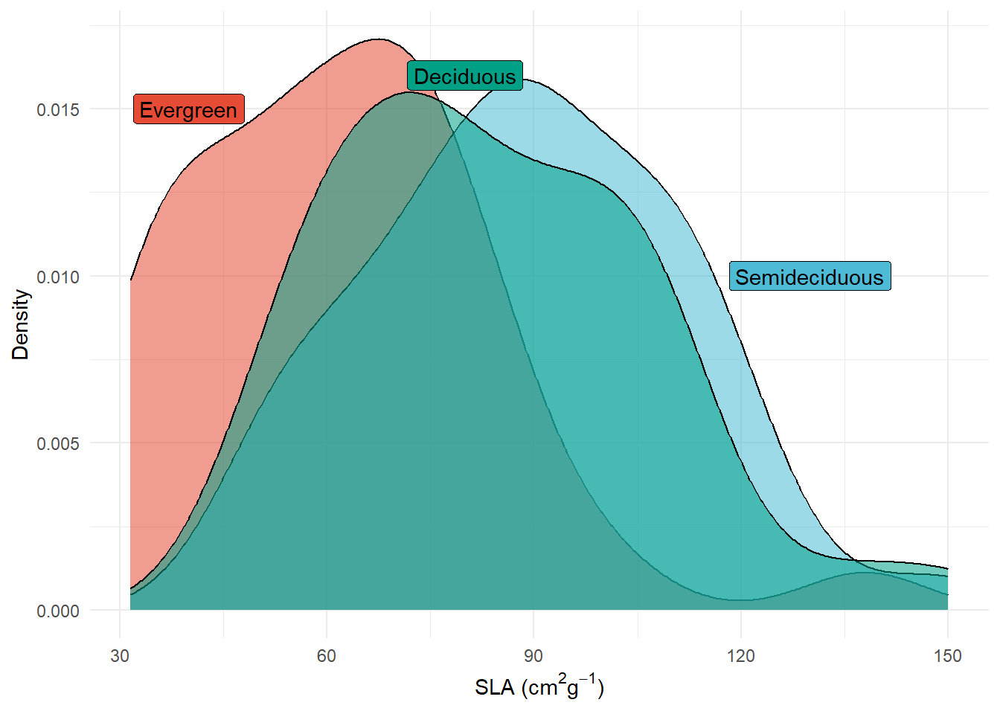
Inserir um elemento gráfico externo
Você pode inserir um elemento gráfico externo, como tabelas ou gráficos, utilizando a função annotation_custom()
Nesse exemplo, vamos inserir um boxplot mostrando as diferenças entre os grupos funcionais dentro do gráfico de pontos.
pontos1 <- ggplot(data = dados) +
geom_point(aes(x=P, y=N, color= Phenology, shape = Vegetation, size=2, alpha=0.5)) +
scale_color_npg(labels = c("Evergreen","Semideciduous", "Deciduous"))+
labs(x = expression(paste("P"[leaf], " (mg ", kg^-1, ")")), y= expression(paste("N"[leaf], " (mg ", kg^-1, ")"))) +
theme_classic()+
guides(alpha="none", size="none", shape="none", colour = guide_legend(override.aes = list(size=4)))+ #para mudar o tamanho do símbolo dentro da legenda
theme(legend.position = "top", legend.title = element_blank(),
legend.background = element_rect(color="black", linetype="solid"))
pontos1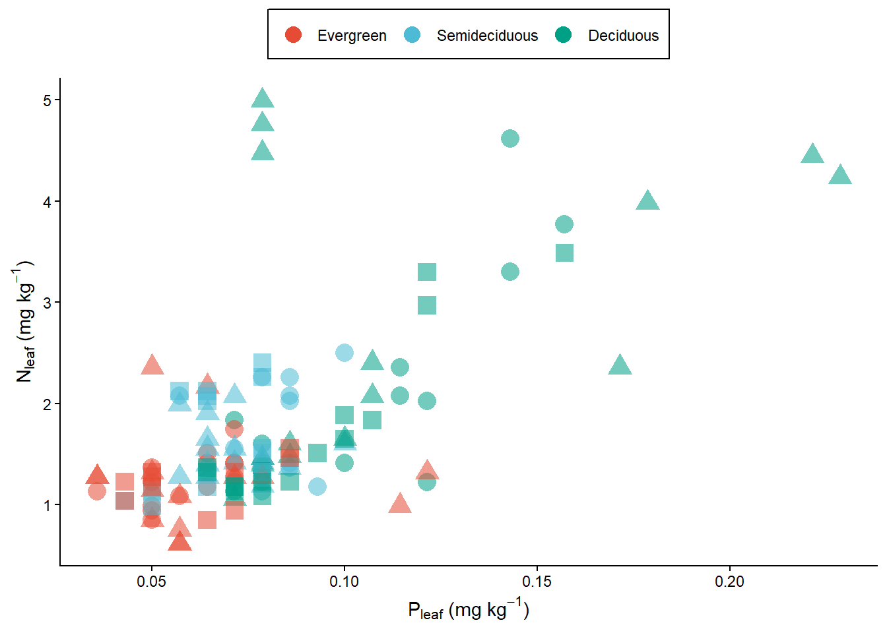
boxplot.grob<- ggplot(dados, aes(x=Phenology, y = N, fill = Phenology)) +geom_boxplot()+
scale_fill_npg()+
labs(y= expression(paste("N"[leaf], " (mg ", kg^-1, ")"))) +
theme_classic()+ guides(fill="none")+
theme(axis.text.x=element_blank(),
axis.ticks.x = element_blank(), axis.title.x = element_blank())
boxplot.grob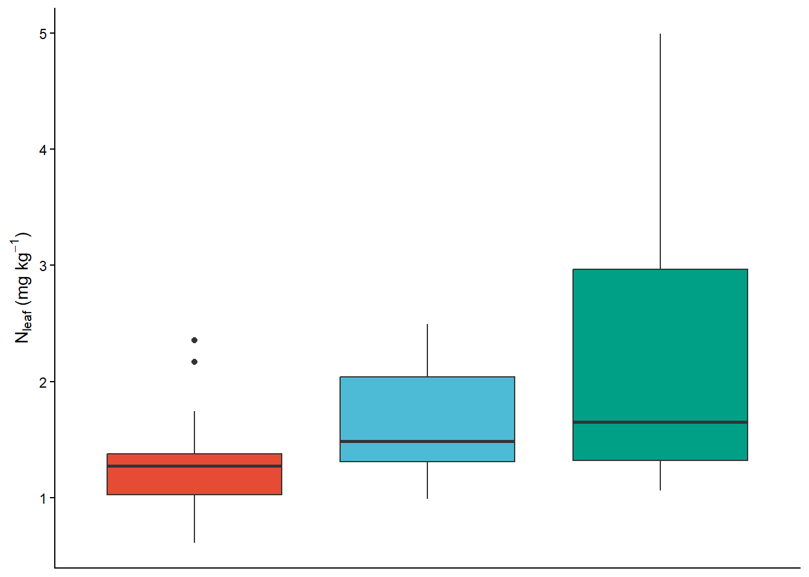
plot<- pontos1 + annotation_custom(ggplotGrob(boxplot.grob), xmin= 0.16, xmax = 0.23, ymin=0.5, ymax=2)
plot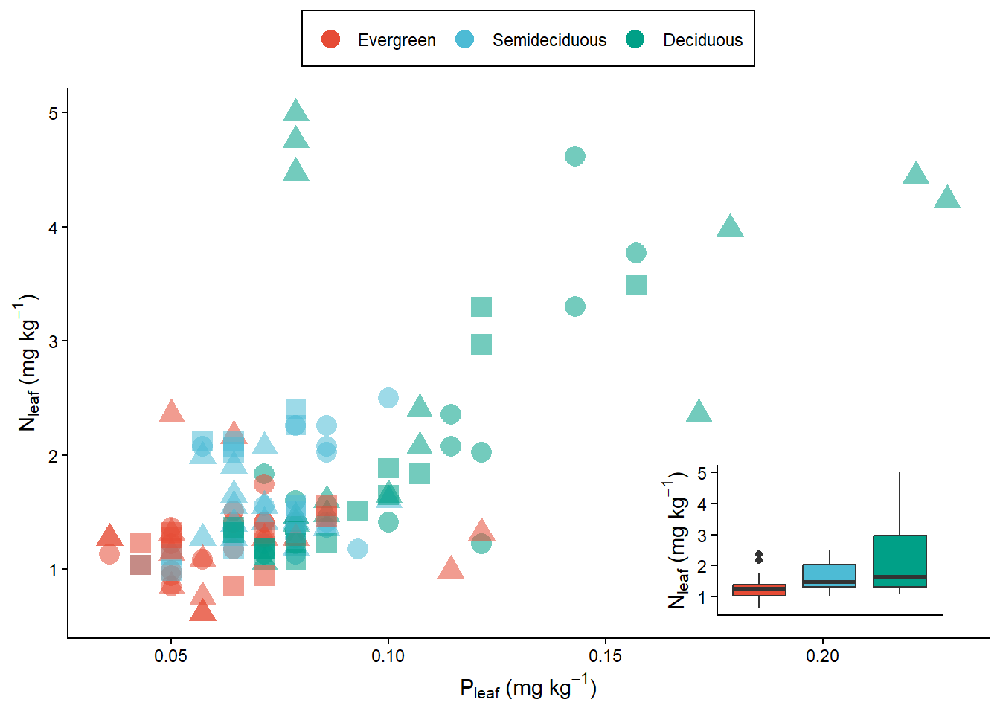
Inserir figuras
Vários pacotes servem para isso, mas um dos jeitos mais fáceis é usando annotation.raster(). Vamos usar o pacote png para ler a figura.
Para mais opções veja os pacotes ggimage e cowplot
library(png)
cerrado <- readPNG("CERRADO.png")
fig1 <- pontos1 + annotation_raster(cerrado, xmin=0.16, xmax = 0.23, ymin=0.5, ymax=2)
fig1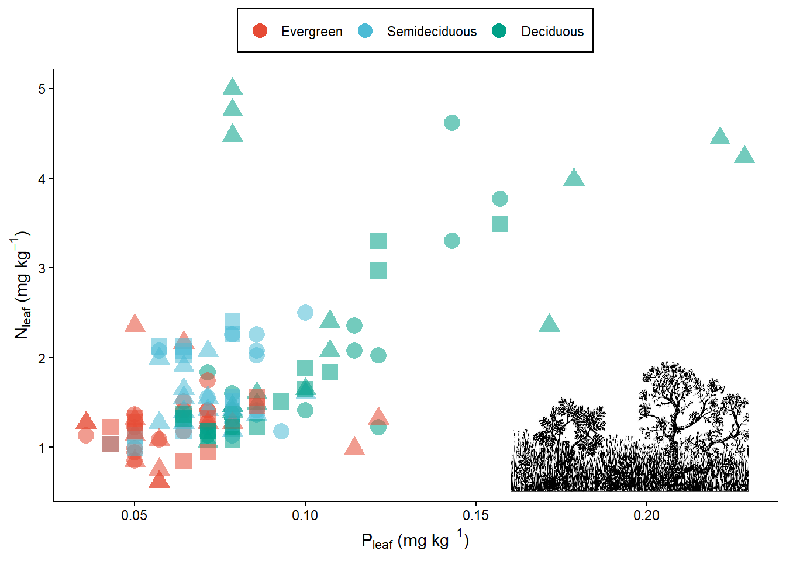
Salvar
Usando ggsave() para figuras únicas
Em pdf: ggsave(“Figura1.pdf”, boxplot.final)
Em jpg deve ser especificado a resolução - o dpi: ggsave(“Figura1.jpg”, boxplot.final, dpi=100)
Especificando o tamanho em pdf: ggsave(“Figura2.pdf”, boxplot.final, width = 10, height= 10)
Juntar figuras em um painel com o pacote gridExtra:
library(gridExtra)
painel <- grid.arrange(boxplot.final, fig1, densidade.final, ncol=1)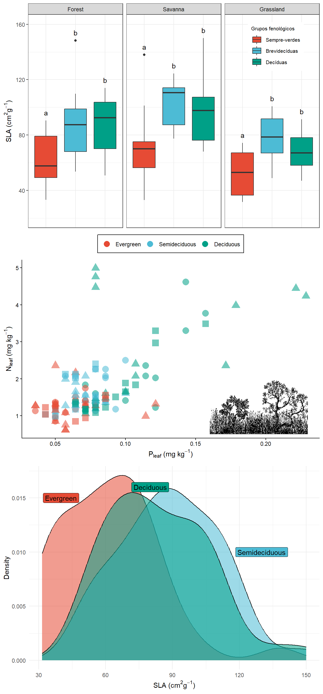
Para salvar em jpg: ggsave(“Painel.jpg”, painel, dpi=300, height= 15, width=7) Para salvar em pdf: ggsave(“Painel.pdf”, painel, height= 15, width=7)
painel2 <- grid.arrange(fig1, arrangeGrob(boxplot, densidade), ncol = 2)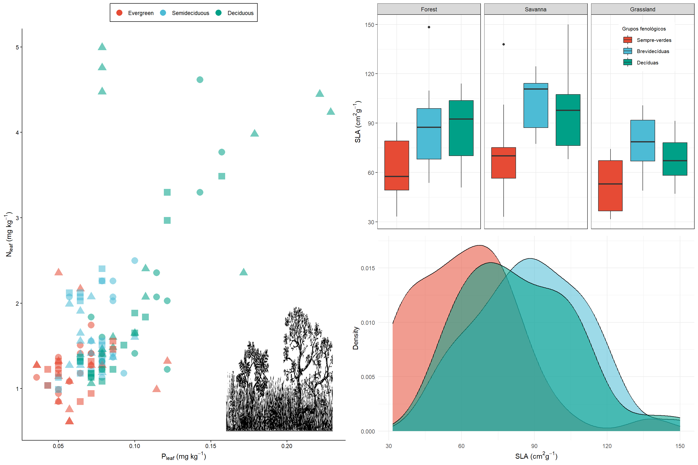
Figuras com design profissional
Vários pacotes estão disponíveis para fazer combinações de figuras montando painéis com ênfase no design. Aqui vou demostrar algumas funcionalidades do pacote patchwork() para combinar gráficos e ggtext(), que permite inserir elementos de markdown no gráfico. Veja as fontes disponíveis com o comando windowsFonts()
library(patchwork)
library(ggtext)
boxplot.markdown <- ggplot(dados, aes(x=Phenology, y = SLA, fill = Phenology)) +
geom_boxplot(alpha =0.8)+
facet_wrap(~Vegetation)+
scale_fill_manual(values=c("#007E6E", "#FF937E", "#B87C4C"),
name= "Grupos fenológicos",labels = c("Sempre-verdes","Brevidecíduas","Decíduas"))+
labs(y= expression(paste("SLA (", cm^2, g^-1, ")"))) +
theme(legend.position = c(0.85,0.85),legend.text = element_text(size=8), legend.title = element_text(size=8), legend.background = element_rect(fill="#F1F3E0", linetype = "blank"), axis.text.x=element_blank(),
axis.ticks.x = element_blank(), axis.title.x = element_blank(), plot.background = element_rect(fill="#D2DCB6", color=NA), strip.background=element_rect(fill="#D2DCB6"), panel.background = element_rect(fill="#F1F3E0"), panel.grid.major = element_blank(), panel.grid.minor = element_blank())
boxplot.markdown$serif
[1] "TT Times New Roman"
$sans
[1] "TT Arial"
$mono
[1] "TT Courier New"#library(extrafont)
#font_import()
#showtext_auto()
final <- boxplot.markdown + plot_annotation(
title = 'Diferences between phenological groups',
subtitle = 'Specific leaf area for **Cerrado** species',
caption = '*SLA calculated as the ratio between fresh leaf area and dry leaf mass ',
theme = theme(plot.title = element_markdown(size=20,family="Arial",face="italic",margin=margin(0,0,0,0.5,"cm"), colour = "#043915"),
plot.subtitle = element_markdown(size=15,hjust=0,family="Palatino",margin=margin(0,0,0.5,0.5,"cm"), color = "#043915"),
plot.caption = element_markdown(size=10,hjust=0,family="Courier"),
plot.background = element_rect(fill="#D2DCB6", color=NA)))
finalPara salvar:
ggsave(“Figura_rosa.pdf”, final, width = 10, height = 8, unit = “cm”)